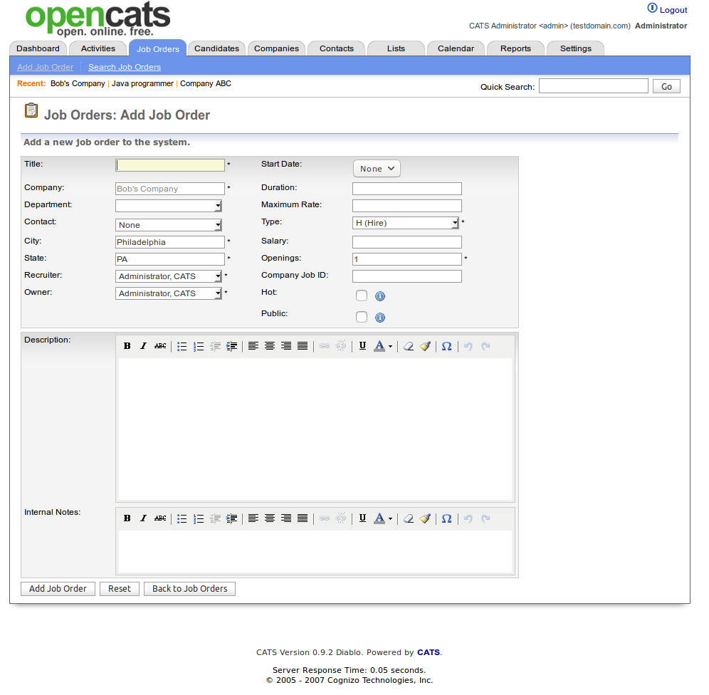

Using OpenCATS-The building blocks: companies, contacts, job orders, and candidates¶

The modules¶
OpenCATS is made up of the following modules:
Home When you log into CATS, you will see the Home module. This is your dashboard, which lists your activities. The Dashboard is customizable from the Settings module.
Activities All of your daily activities and interactions with candidates, companies and contacts are populated in this module.
Job Orders All of the available Job Orders are displayed in this module. Search existing and create new Job Orders.
Candidates All of the available Candidates are displayed in this module. Search existing and create new Candidates. Access your Saved Lists.
Companies All of the available Companies are displayed in this module. Search existing and create new Companies.
Contacts All of the available Candidates are displayed in this module. Search existing and create new Contacts. Access your Cold Call List.
Calendar All scheduled events are populated in this module. By default, the Calendar shows the week view of the current week. Add new Events and access your Upcoming Events.
Reports All available reports are populated in this module.
Settings Options to customize your account and CATS features are available in this module. Users change your Profile, Password. Administrators access your account, change your Career Portal and E- mail configurations, and customize your dashboard, import and backup data.
Note
Let’s start entering in information and populating our fantastic new OpenCATS system.
Add a new Company¶
Click on Companies
Note
I have already entered some test information. A new system screen will look a little different.

This is your main company screen. This will have an overview of all the companies in your OpenCATS system. From new leads, to active clients and old clients. They will all be here.
Note
For internal hiring (your company), select Internal postings as the client.
Click on Add Company

There are two ways to add information into OpenCATS.
- Copy and paste it into the box labeled
cut and paste free-form address hereThen click the<--button to populate the fields. - Manually type and paste it into each field on the left.
Note
Don’t forget to enter key technologies for the company and any miscellaneous notes that you want to save in the bottom two fields for future reference.
Warning
The success rate of auto-populating the information fields for me has always been terrible. Sometimes it works great, sometimes it’s doesn’t. I usually just enter the fields one at a time manually.
If it worked, it should look like this. If some of the information did not populate, manually enter it and let’s move one.
This is what you should see.
Click Add Company

Voila! You have a new client!
If you want to add any relevant attachment documents such as a copy of your client agreement, benefits overview, etc. Click the Add Attachment button.
Add a new Contact¶
Next let’s add a Company Contact.
Click Add Contact at the bottom of the current screen.
Fill in all the information fields, including any relevant notes that’s you want to remember for later. Then click Add Contact
You should now see the contact listed in the Contacts section of the Company screen.

Add a new Job Order¶
From the current screen, let’s add our first Job order. Click Add Job Order in the Job Orders section of Bob’s Company page.
Note
OpenCATS is set up to run Direct-hire (Perm) or Contract (project) jobs. We will note the differences below.
Let’s look at the fields in the Add Job Order screen:
The fields on the upper left column are self-explanatory.
- Start Date is when the hired candidate should start.
- Duration The length of contract (Project) for a temporary role. It this is a permanent role, you can put “direct hire”, whatever you want, or just leave it blank.
- Maximum rate Self-explanatory
- Type This drop-down field let’s you select the type of role. Options are: Hire, Contract to hire, Contract, or freelance
- Salary Put the salary range here
- Openings Number of openings
- Company Job ID This is for the unique Job ID assigned to this role.
- Hot If this is a hot job, check this box.
- Public If you have the OpenCATS job board set up (we will do this later), checking this box will make this job order visible on it. Candidates will be able to view and apply.
- Description Enter your job description here
- Internal Notes Any notes or information entered here will be visible within your company, but not visible on your public job board.
Note
If you have the public job board set up (we will go through this later), all the information on this screen except the Internal Notes section will be viewable to anyone looking at your jobs. Including the listed salary information. If you do not want that visible, put it in the Internal Notes section.

Click Add Job Order
This will take you to your new Job Order screen.

If everything looks correct, let’s move on to adding our first candidate in OpenCATS and into the pipeline for this job.
Adding a Candidate and attaching them to the Job Order pipeline¶
Click Add Candidate to This Job Order Pipeline at the bottom of the screen.
Then Add Candidate.

Click Browse to upload a resume from your local file system.
From this screen you need to manually copy and paste into the information fields on the left. When you have filled out all of the necessary information, click Add Candidate in the bottom left corner.

Success! We have a candidate in the pipeline!
Note
Make sure to Rate your candidates with the stars under Match on the bottom this screen. It will help with quick reference later on.